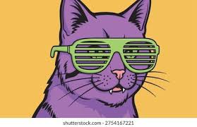

Working With Images

Above are two pictures of a cool cat, the one on the left is a .png and the right is .jpg. While both to be of similar quality, the .png is much larger with 72.4kb file size, whereas the .jpg is only 8.6kb
| Term | Definition |
|---|---|
| Deprecated | Refers to a feature, function, or code that is still operational but is no longer recommended for use and may be removed in the future. |
| Responsive Design | An approach to web development where the layout automatically adjusts its size and appearance to look and work well across all devices. |
| User Experience | Commonly known as UX, it encompasses all aspects of a person's emotions, attitudes, and overall satisfaction when interacting with a system, product, or service. |

Above are two pictures of a cool cat, the one on the left is a .png and the right is .jpg. While both to be of similar quality, the .png is much larger with 72.4kb file size, whereas the .jpg is only 8.6kb